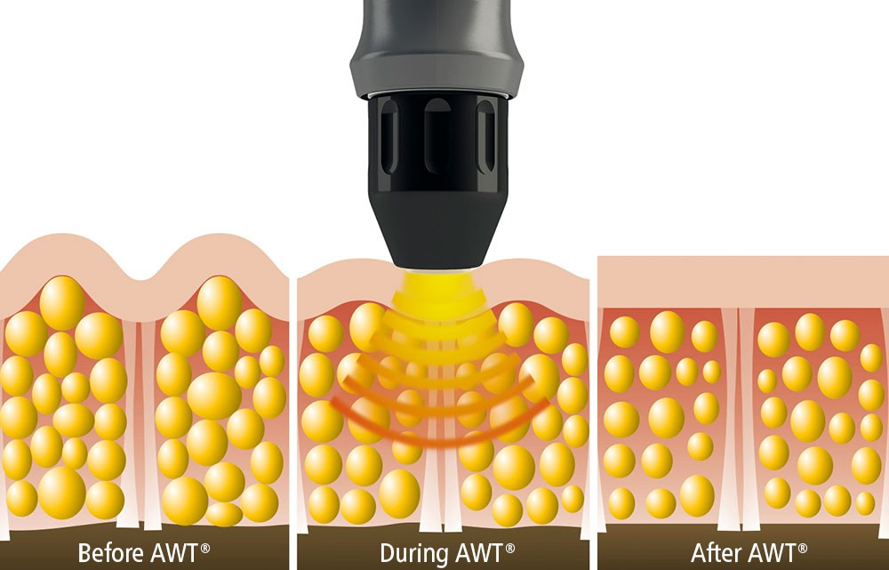

Non-surgical treatment options to reduce penile curvature and pain. Acoustic wave therapy, medications, and comprehensive care at our Sandy and Layton clinics.
Peyronie's disease is a condition where scar tissue (called plaque) forms inside the penis, causing it to curve during erection. This curvature can cause pain, difficulty with intercourse, and significant emotional distress.
The condition affects 6-10% of men, typically between ages 40-70, though it can occur at any age. While mild curvature may not require treatment, significant curvature or pain should be evaluated.

Our primary non-surgical treatment. Sound waves break down scar tissue, promote healing, and reduce curvature. Particularly effective during the acute phase.
Oral medications and supplements that may help during the active phase. Options include pentoxifylline, vitamin E, and colchicine depending on your situation.
For optimal results, we often combine acoustic wave therapy with medications and other treatments for a comprehensive approach to Peyronie's disease.
Results vary based on the stage of disease and treatment approach:
"I was dreading surgery for my Peyronie's disease. The team at Mint Medical offered acoustic wave therapy as an alternative, and after several sessions, my curvature has reduced significantly and the pain is completely gone. Life changing."
Peyronie's disease is a condition where scar tissue (plaque) forms inside the penis, causing curved, painful erections. It affects 6-10% of men, typically between ages 40-70, though it can occur at any age.
Peyronie's is usually caused by repeated injury to the penis during sex, athletic activity, or accidents. Genetics, connective tissue disorders, and age are also risk factors. The injury triggers abnormal wound healing that forms scar tissue.
Yes, non-surgical options include acoustic wave therapy (which breaks down scar tissue), medications, and traction therapy. These are most effective during the acute phase when the condition is still developing.
Acoustic wave therapy can reduce curvature by 10-30 degrees in many patients and significantly reduce pain. It works by breaking down scar tissue and promoting healthy tissue regeneration. Multiple treatment sessions are typically required.
Yes, about 20-50% of men with Peyronie's also experience erectile dysfunction. This may be due to the plaque affecting blood flow, psychological factors, or both. ED can often be treated alongside the Peyronie's.
In about 13% of cases, Peyronie's may improve without treatment. However, most cases either stay the same or worsen without intervention. Early treatment during the acute phase offers the best chance of improvement.
Seek treatment as soon as you notice symptoms—curvature, pain, or a lump in the penis. Early intervention during the acute phase (first 6-12 months) is most effective. Don't wait until the condition stabilizes.
Schedule your FREE consultation today. Early treatment offers the best results. We'll evaluate your condition and discuss your options.
Financing available through LiteCredit